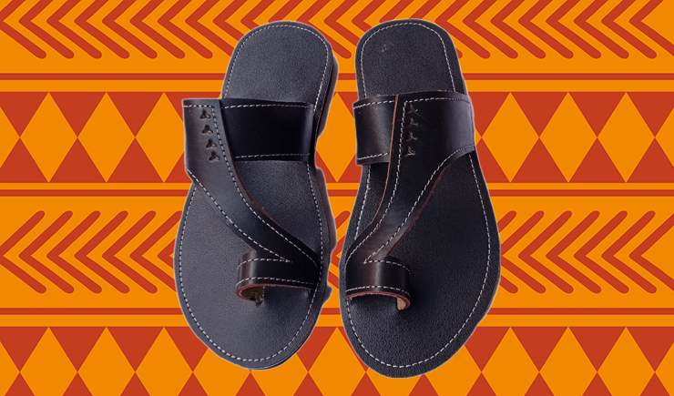
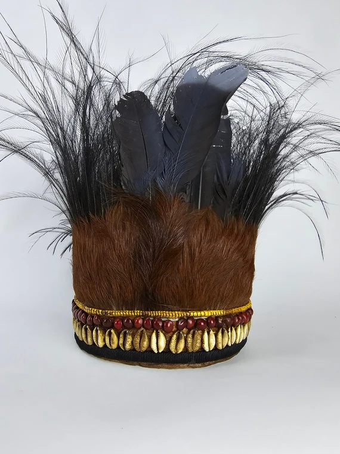
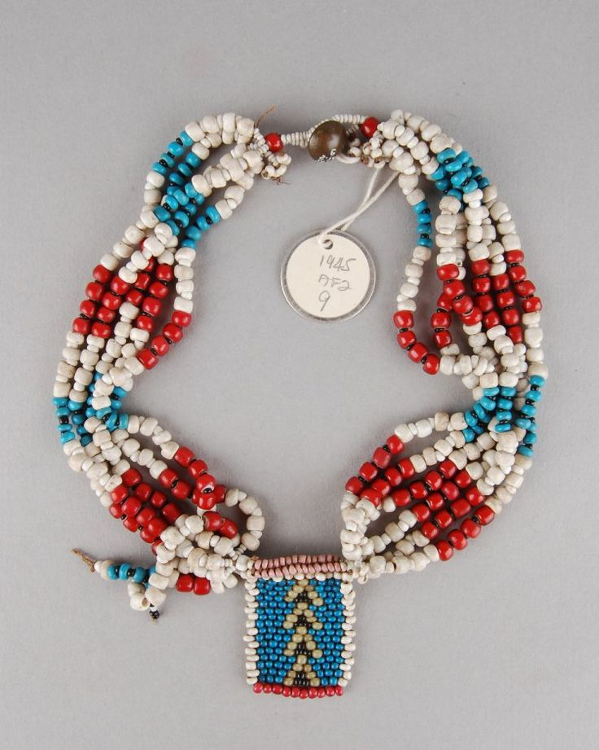
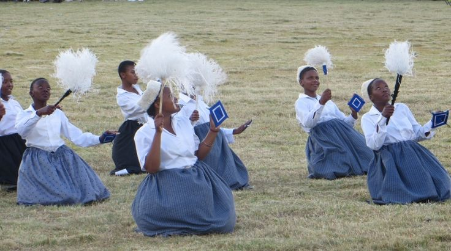

Basotho traditional clothing, especially the iconic blanket, represents pride, identity, and cultural heritage. It’s worn in ceremonies and daily life, symbolizing unity and tradition.

Basotho Blanket
A cultural symbol of unity and identity in Basotho life.
Read more

Wataka Socks
Modern socks designed with traditional Basotho patterns.
Read more

Seshoeshoe Makoti Dress
A bride’s outfit made from seshoeshoe fabric.
Read more
Mokorotlo hats
Conical straw hat symbolizing unity and ancestral protection.
Read more
Dipholoana Beads
Necklaces and bangles signifying status and tribe.
Read more

Initiation Dress
Worn during puberty rites, often with symbolic colors
Read more

Seshoeshoe Skirt
Paired with blouse or wrap, often worn by young women.
Read more

Traditional Wedding Dress
Elaborate Seshoeshoe gown with beadwork and blanket overlay.
Read more

Beaded Shawl
This shawl features beadwork inspired by Basotho and Ndebele traditions.It’s handcrafted in South Africa and often worn during ceremonies or cultural showcases.
Read more
Kobo ya Monna
Basotho man draped in a ceremonial blanket, often worn over a shirt and trousers.
Read more

Lieta tsa Letlalo
Leather sandals made from cowhide.
Read more

Kobo e Ntšo
Often worn during mourning periods or in remembrance ceremonies, the kobo e ntšo is a plain black cloth wrapped around the shoulders
Read more

Seanamarena
Luxury variant gifted at weddings and rites of passage.
Read more
Kobo ya Boroko
Everyday blanket for warmth and modesty.
Read more
Traditional Herding Outfit
Practical wear for mountain terrain.
Read more
.jpeg)
Ceremonial Suit with Blanket
A Mosotho man wearing a tailored suit beneath a Seanamarena blanket, symbolizing dignity and leadership.
Read more

Initiation Robe
Worn during male coming-of-age ceremonies.
Read more
Beaded Headband
Decorative band worn by women and dancers.
Read more

Ceremonial Feathered Hat
Worn by chiefs and elders.
Read more
Initiation Headwrap
Symbolic wrap for girls during puberty rites.
Read more

Wedding Headwrap
Elegant wrap with beads and embroidery.
Read more

Leather Belt (Sehloho)
Used to secure blankets and dresses.
Read more
Cowhide Bag
Carried during ceremonies or herding.
Read more

Beaded Anklets
Beaded loops with dangling strands, worn during initiation and dance
Read more
Traditional socks
Modern reinterpretation with Basotho motifs.
Read more

Basotho Necklace
Set of 'Basotho' inspired beaded jewelry worn women in Lesotho featuring intricate patterns and vibrant colors that represent their cultural identity.
Read more

Traditional boots
A Young black Basotho shepherd, in traditional clothes standing with one hand on his head against a clouded sky..
Read more

Basotho Dance Attire
Women kneeling in rhythmic motion, wearing layered skirts, headwraps, and beaded accessories.
Read more